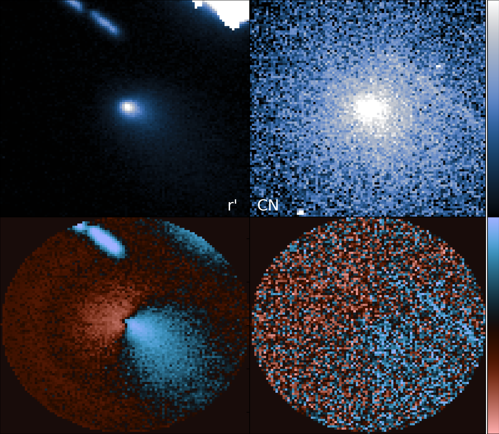

A list of refereed papers that I'm on can be found at this ADS link. As of August 2022, it's seven first-authored publications and seventeen co-authored ones, with a few in prep. or revision.
Artist's Interpretation of (3200) Phaethon by Heather Roper.
Dormant Comets & Meteor Shower Parent Bodies
Until the 1980's, meteor showers were thought to come strictly from cometary debris trails -- the dust left behind in a comet's orbit. While many meteor showers were linked to a particular comet that made them, the Geminids sat "parent"-less -- until an inactive asteroid-like object was found in the right orbit, (3200) Phaethon. Phaethon is really quite interesting in its own right -- it looks blue in sunlight (see the above illustration), gets much closer to the Sun than almost every other object in the solar system, and is actually still(?) active, but only when it is as close to the Sun as it can get. The goal of my research in this area is to try to combine an understanding of Phaethon's modern properties with information about the Geminids to build a more coherent story of the Geminids came to be, and how Phaethon came to have its strange properties.
We conducted rotationally-resolved (whole surface) spectroscopic observations of Phaethon throughout the visible and near-infrared using the 1.5m telescope on Mount Hopkins (Arizona) and the 3.0m NASA Infrared Telescope Facility (IRTF) on Mauna Kea (Hawaii) to look for rotational variation of its surface properties and to make predictions and suggestions for the upcoming JAXA mission to Phaethon, DESTINY+. These observations were published in 2018 in the Astronomical Journal as "Rotationally Resolved Spectroscopic Characterization of Near-Earth Object (3200) Phaethon" (Kareta et al., 2018), available here at AJ and here on ArXiV. In general, we found Phaethon's surface to be largely homogenous, darker than previously estimated but consistent with the radar-derived size of the object, and we argue against an origin for Phaethon in the Pallas Collisional Family, but there's more work that could test that. We're working hard on some follow-up projects to this work, so stay tuned.
Stacked image of Echeclus in the r' filter on Dec. 9, 2017.
Centaurs
The Centaurs are small solar system bodies on chaotic, planet-crossing orbits in the middle and outer solar system. They're escapees from the Scattered Disk and the few that migrate all the way into the inner solar system successfully become Jupiter Family Comets. A small fraction of the centaurs become active like comets at distances from the sun too far for the sublimation of water ice to be creating their comae and tails. 174P/Echeclus is one of these centaurs, and its activity takes the form of explosive outbursts every few years seemingly uncorrelated with how warm its surface is. In its largest outburst in 2005, Echeclus appeared to eject what looked like a fragment that was itself active, and was briefly the most active centaur by a factor of ~30. Is Echeclus "typical" among the centaurs?
We obtained visible and near-infrared observations of Echeclus just days after the onset of its second largest outburst ever in December 2017. Synthesizing these multiple wavelength observations faciliatated a more in-depth understanding of the dust properties of Echeclus as well as showed clear evidence for a debris-ejection event analogous to much weaker version of the 2005 fragmentation event. However, a new high-resolution orbital integration reveals no evidence for a recent large change in orbit thought to fuel activity in many centaurs. This work was published in the Astronomical Journal as "Physical Characterization of the 2017 December Outburst of the Centaur 174P/Echeclus" (Kareta et al., 2019) and is available here at AJ and here on ArXiV. One takeaway is that if Echeclus's explosive activity is at all representative of the centaurs, then there may be other fragmentation / debris-ejection events happening on other centaurs that are going unnoticed.
Comparison of images of 2I in the r' and Hale-Bopp CN filters (from October, 2019) to enhanced versions of the same images.
2I/Borisov

The discovery of the first-ever (unambiguous) interstellar comet, 2I/Borisov, presented an obvious in-road to investigating questions at the bridge of planetary science and astronomy, like "How do other stellar systems compare to our own?" or "Are planets and planetesimals built the same everywhere?" Beyond that, it was a chance to study a comet that formed elsewhere. (When I gave a SpaceDrafts talk on the topic, I framed it as "Is stuff out there like stuff here?")
We obtained observations of this interstellar visitor from the middle of September through early December 2019 using some of the University of Arizona's telescopes (2.3m Bok, 6.5m MMT, 2 x 8.4m LBT) to constrain not just what material was being lofted off the surface of the comet, but how this evolved in time. A preliminary reduction of a subset of the data was published in February 2020 in the Astrophysical Journal Letters as "Carbon Chain Depletion of 2I/Borisov" (Kareta et al., 2020) which is available here at ApJL and here on ArXiV. We were able to set an incredibly low C2/CN ratio in early October for the object, implying a composition unlike almost any Solar System comet, but later observations by other groups saw the ratio grow into a more 'normal' value, perhaps suggesting that the volatiles in 2I aren't locked up inside and released from the nucleus in the same way they are in Solar System comets. (More observations of future interstellar comets are probably needed to know how to properly interpret any observations.)
Get in touch
Send me an email! I'm always interested in talking about science, coffee, space, biking, Arizona weather...